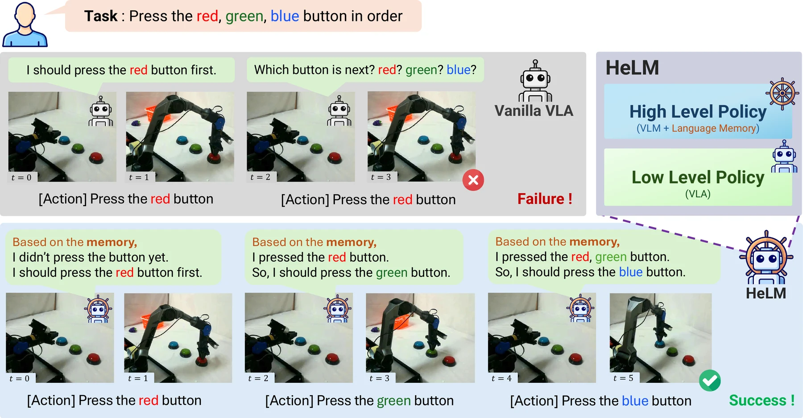
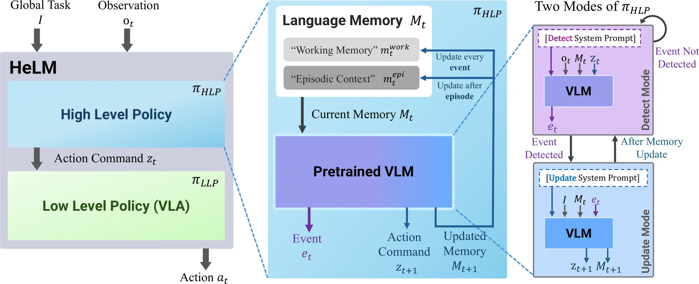
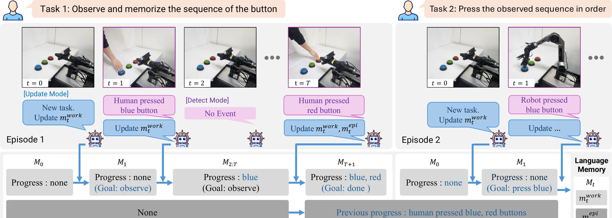
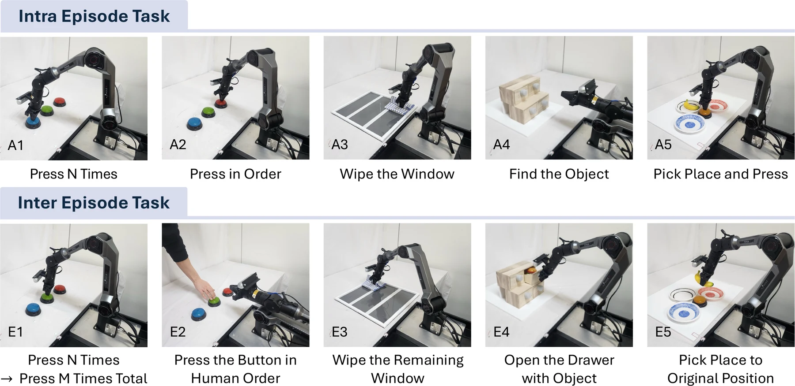

HIERARCHICAL EXPLICIT LANGUAGE MEMORY
Memory makes
the next move.
A robot can see what is happening.
HeLM helps it remember what already happened.
An explicit language memory connects a vision-language planner to a robot action policy—so each action follows progress through the whole task.
HeLM: Hierarchical Explicit Language Memory
for Non-Markovian Manipulation
Progress: red
Select a step. The memory changes the next action.
01 / THE PROBLEM
The same view.
A different thing to do.
After a button is released, the scene can look almost unchanged. A policy that sees only the current observation can repeat a completed action.
“Which button is next?”
The image alone does not tell the robot which steps it already completed.
“Red is done. Green is next.”
HeLM carries progress forward as text that guides the next action.

02 / THE METHOD
Remember in language.
Act through a robot policy.
HeLM separates deciding what comes next from executing the movement. The high-level vision-language model (HLP) manages memory; the low-level action policy (LLP) controls the robot.
- 01
Notice an event
Detect a meaningful change, such as a button press. If nothing happens, keep the memory.
DETECT - 02
Update the memory
Record the new progress and decide which action command should come next.
UPDATE - 03
Execute the action
The low-level policy turns the command and current observations into robot actions.
ACT

The high-level policy maintains language memory and chooses an action command. The low-level policy turns that command into robot actions. Detect and update are two modes of the same VLM.
Scroll horizontally to read the full figure.
Working memory
Progress inside the current instruction, updated when a task event occurs.
Count: 2 (Goal: 3)Episodic context
Information retained across episodes, available when a new instruction arrives.
Previous_Count: 3Go deeper: event-triggered updates
Detect mode emits a task-relevant event or none. Update mode runs when an event is detected or the global instruction changes. Working memory tracks the current task; episodic context carries information across task boundaries.

03 / LOOK INSIDE THE MEMORY
Follow the task.
Read every update.
Choose a task, then step through the sequence. The setup photo identifies the task; the progress display and memory panel follow its task specification.
Setup photos are from paper Figure 4 and remain fixed. Progress and memory replay the task specifications; they are not recorded robot inference. Playback timing is illustrative. For cross-episode memory, try E1 and follow the new-instruction marker.
SEE IT ON THE ROBOT
From memory
to movement.
A framework walkthrough and real-world examples of HeLM in action.
Explore the evaluation tasks04 / THE EVALUATION SUITE
Ten tasks.
Different ways to remember.
51 variants test counting, ordering and object history. Five tasks use memory within an instruction; five require context across episodes.
See the real-world task setups

05 / THE EVIDENCE
Memory that carries
through the task.
Real-world evaluation across 10 tasks. Each task averages 15–30 trials, with 3–6 variants and 5 trials per variant.
Within an episode
Mean subtask-level success.
Keyframe-HLP: 72.9%.
Across episodes
Mean success on E1–E5.
Keyframe-HLP: 16.6%.
Zero-shot HLP
Generalization to unseen variants.
Keyframe-HLP: 65.7%.
WITHIN-EPISODE COMPARISON
Progress is useful. Finishing matters.
All within-episode scores
| Method | A1 | A2 | A3 | A4 | A5 | Avg. |
|---|---|---|---|---|---|---|
| HeLM | 100 | 92.2 | 96.6 | 66.6 | 73.3 | 85.7 |
| Keyframe-HLP | 90★ | 91.1 | 60 | 79.2★ | 44.4 | 72.9 |
| PCMB-π₀ | 100 | 24.4 | 33.3 | 32.9 | 6.7 | 39.5 |
| Naïve-π₀ | 31.1 | 6.6 | 33.3 | 8.3 | 4.4 | 16.7 |
★ Keyframe-HLP fails to detect termination. Subtask scores count partial progress; use the chart’s strict metric for ordered completion and stopping.
Across-episode scores
| Method | E1 | E2 | E3 | E4 | E5 | Avg. |
|---|---|---|---|---|---|---|
| HeLM (Ours) | 90.5 | 87.7 | 90 | 80 | 97.7 | 89.2 |
| Keyframe-HLP | 27.6★ | 0 | 33.3 | 0 | 22.2 | 16.6 |
★ Keyframe-HLP fails to detect termination. PCMB-π0 and Naïve-π0 are excluded here: they reset internal state at episode boundaries and have no mechanism for cross-episode context.
Zero-shot HLP generalization
The LLP is fine-tuned to execute specific action commands, but the HLP receives no task-specific finetuning for these compositions — e.g. counting to five when training only covered up to three, or grounding an object never seen during training.
| Method | A1′ | A2′ | A3′ | A4′ | A5′ | Avg. |
|---|---|---|---|---|---|---|
| HeLM (Ours) | 100 | 95 | 67 | 67 | 61 | 78 |
| Keyframe-HLP | 100★ | 63.9 | 77.8 | 38.9★ | 48.1★ | 65.7 |
★ Keyframe-HLP fails to detect termination in A1′, A4′, and A5′.
MEMORY COST
A compact record
as the task gets longer.
At 8 events, digitised estimates show approximately 4.5× lower VRAM usage and 2.3× faster inference than Keyframe-HLP.
Approximate values from paper Fig. 7, not raw benchmark measurements. HeLM is slightly slower at short horizons.
Additional simulation results: LIBERO-Mem
As a complement to the real-robot experiments, we ran HeLM on the LIBERO-Mem benchmark against published memory-augmented baselines. We report these as exploratory evidence — see the paper for benchmark limitations we observed.
| Method | T1 | T2 | T3 | T4 | T5 | T6 | T7 | T8 | T9 | T10 | Avg. |
|---|---|---|---|---|---|---|---|---|---|---|---|
| HeLM (Ours) | 75.0 | 60.0 | 75.0 | 55.0 | 65.0 | 25.0 | 45.0 | 10.0 | 85.0 | 90.0 | 58.5 |
| π0.5 | 50.0 | 80.0 | 15.0 | 20.0 | 15.0 | 5.0 | 0.0 | 5.0 | 85.0 | 90.0 | 36.5 |
| Naive E-SlotSSM | 50.0 | 0.0 | 33.3 | 0.0 | 14.3 | 0.0 | 0.0 | 0.0 | 30.0 | 20.0 | 14.8 |
| SlotVLA (h=8) | 50.0 | 0.0 | 0.0 | 0.0 | 0.0 | 0.0 | 0.0 | 0.0 | 0.0 | 0.0 | 5.0 |
| π0 (h=1) | 50.0 | 0.0 | 0.0 | 0.0 | 0.0 | 0.0 | 0.0 | 0.0 | 0.0 | 0.0 | 5.0 |
Baseline rows for π0, SlotVLA, and Naive E-SlotSSM are taken from the LIBERO-Mem paper.
06 / EXPLORE THE PROJECT
Take a closer look.
Task specifications, the data pipeline, HLP training and robot evaluation code are available in the repository.
Explore the codeBibTeX
Publication metadata will be updated when the paper is available.
@misc{helm2026,
title = {HeLM: Hierarchical Explicit Language Memory for Non-Markovian Manipulation},
year = {2026}
}